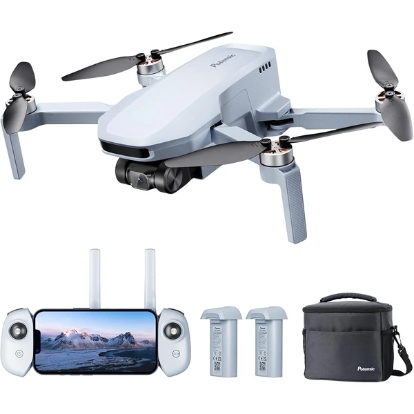
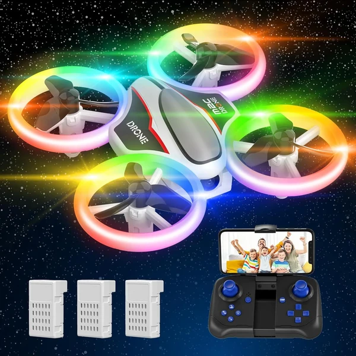
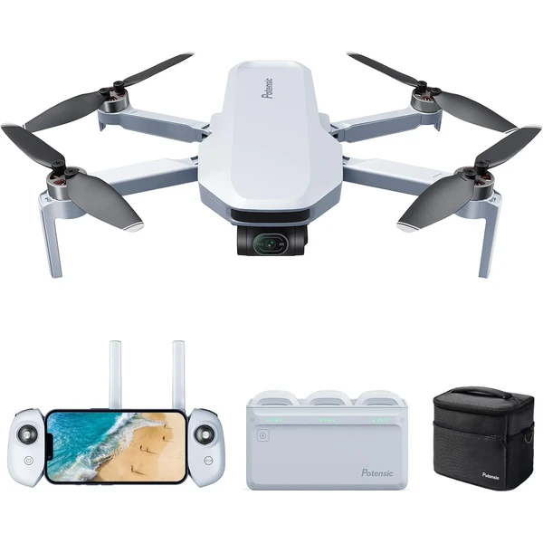
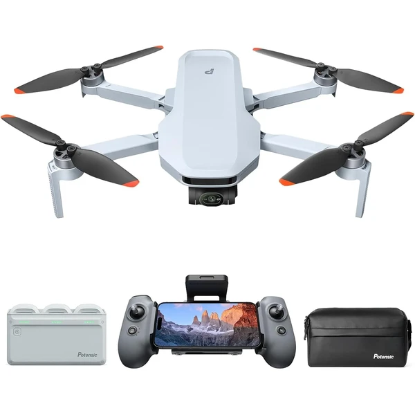
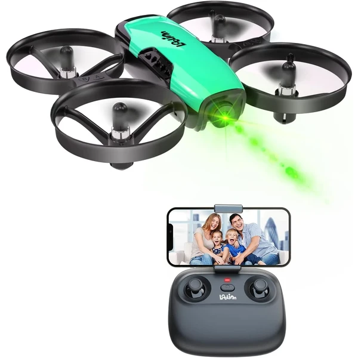
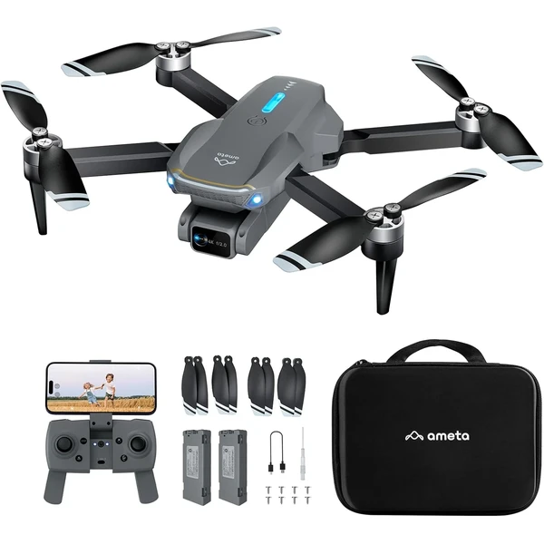
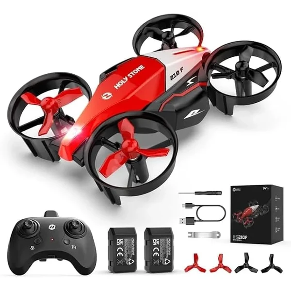

Potensic ATOM SE Combo GPS
Un dron con cámara 4K real y GPS de alta precisión que regresa automáticamente al punto de despegue con un solo clic. Dos baterías inteligentes ofrecen hasta 62 minutos de vuelo combinados.
⭐ ¿Por qué nos gusta?
- ✔ Cámara 4K real con estabilización EIS.
- ✔ GPS con retorno automático al punto de despegue.
- ✔ 62 minutos de vuelo combinando dos baterías.
💬 Lo que más destacan las familias
Muchos padres coinciden en que el retorno automático por GPS da mucha tranquilidad frente al miedo a perder el dron. La duración de las baterías también se valora, ya que permite sesiones de vuelo mucho más largas que otros modelos.
Ver en Amazon

DEERC D13 Mini Drone con Evitación de Obstáculos
Un mini dron con sensores que detectan y evitan obstáculos automáticamente, ideal para volar con seguridad en interiores. Incluye 6 modos de luces LED y tres baterías para 21 minutos de vuelo total.
⭐ ¿Por qué nos gusta?
- ✔ Sensores que evitan obstáculos automáticamente.
- ✔ 6 modos de luces LED distintos.
- ✔ Tres baterías para 21 minutos de vuelo total.
💬 Lo que más destacan las familias
Entre los comentarios más habituales aparece lo bien que funciona la detección de obstáculos, incluso en habitaciones con muebles. Las luces LED también se mencionan como un extra muy vistoso durante el vuelo nocturno.
Ver en Amazon

Mini Drone con Luces de Colores
Un dron con cámara HD 1080P y 8 luces LED de colores con distintos efectos de iluminación. Incluye tres baterías que ofrecen hasta 22 minutos de vuelo combinados y modo sin cabeza para principiantes.
⭐ ¿Por qué nos gusta?
- ✔ Cámara HD 1080P para fotos y vídeos.
- ✔ 8 luces LED con varios efectos distintos.
- ✔ Tres baterías para vuelo prolongado.
💬 Lo que más destacan las familias
Lo que más suele gustar es la combinación de cámara y espectáculo de luces, que hace que el vuelo nocturno sea especialmente vistoso. El modo sin cabeza facilita mucho el control para quienes se inician.
Ver en Amazon

Potensic ATOM GPS Dron con Cámara 4K
Un dron con cámara 4K estabilizada en gimbal de 3 ejes y transmisión de hasta 6 km. Cuenta con seguimiento visual inteligente y modos QuickShots para grabar maniobras aéreas automáticas.
⭐ ¿Por qué nos gusta?
- ✔ Cámara 4K con gimbal estabilizado de 3 ejes.
- ✔ Seguimiento visual inteligente del sujeto.
- ✔ Tres baterías para hasta 96 minutos de vuelo.
💬 Lo que más destacan las familias
Se repite bastante el comentario de que la estabilización de la cámara marca una diferencia notable en la calidad de las grabaciones. El seguimiento automático del sujeto también sorprende gratamente por su precisión.
Ver en Amazon

Potensic ATOM 2 Dron con Cámara 4K
Un dron avanzado con sensor de 1/2 pulgada capaz de grabar en 4K y hacer fotos de 48MP, con seguimiento por inteligencia artificial. Transmisión de hasta 10 km y modo de fotografía nocturna con IA.
⭐ ¿Por qué nos gusta?
- ✔ Sensor grande para fotos de 48MP y vídeo 4K.
- ✔ Seguimiento por inteligencia artificial.
- ✔ Transmisión de hasta 10 km de alcance.
💬 Lo que más destacan las familias
Una de las cosas más comentadas es la calidad de imagen, notablemente superior a otros drones de rango similar. El seguimiento por IA también se valora porque simplifica mucho grabar en movimiento sin perder el encuadre.
Ver en Amazon

Loolinn Dron con Cámara Ajustable
Un mini dron especialmente diseñado para niños con cámara ajustable que permite capturar fotos y videos desde diferentes ángulos. Incluye protectores de hélice para máxima seguridad y dos baterías.
⭐ ¿Por qué nos gusta?
- ✔ Cámara manual ajustable en múltiples ángulos.
- ✔ Protectores de hélice incluidos para seguridad.
- ✔ Muy fácil de volar para principiantes.
💬 Lo que más destacan las familias
Entre los comentarios más habituales aparece lo sencillo que resulta manejar la cámara ajustable incluso para niños sin experiencia. Los protectores de hélice también se mencionan como esencial para evitar sustos.
Ver en Amazon

Loolinn Dron Anti-Colisión
Un mini dron equipado con tecnología de evitación automática de obstáculos mediante sensores infrarrojos. Permite volar sin control remoto usando solo las manos. Incluye acrobacias de 360° y dos baterías.
⭐ ¿Por qué nos gusta?
- ✔ Sensores evitan choques automáticamente.
- ✔ Control por gestos con las manos.
- ✔ Hasta 14 minutos de tiempo total de vuelo.
💬 Lo que más destacan las familias
Una de las cosas más comentadas es que los sensores realmente funcionan: los drones evitan choques incluso en espacios cerrados. El control por gestos fascina a los niños como una experiencia casi mágica.
Ver en Amazon

Drone i9 con Luces LED
Un dron equipado con LEDs de neón de múltiples colores que cambian durante el vuelo. Cuenta con función de retención de altitud automática y acrobacias de 360°. Incluye protectores de hélice y dos baterías recargables.
⭐ ¿Por qué nos gusta?
- ✔ Luces LED que cambian de color en el aire.
- ✔ Retención automática de altitud para control fácil.
- ✔ Tres modos de velocidad ajustables.
💬 Lo que más destacan las familias
Lo que más suele gustar es el espectáculo de luces, especialmente cuando vuela de noche. La retención automática de altitud facilita mucho el control, permitiendo que niños sin experiencia mantengan el dron estable.
Ver en Amazon

Ameta S20 Lite Dron con Cámara 4K
Un dron con cámara 4K y motor brushless para un vuelo más suave y silencioso que los motores tradicionales. Dos baterías inteligentes ofrecen hasta 36 minutos de vuelo combinados.
⭐ ¿Por qué nos gusta?
- ✔ Motor brushless para un vuelo más suave.
- ✔ Cámara 4K con transmisión FPV en vivo.
- ✔ Dos baterías para 36 minutos de vuelo.
💬 Lo que más destacan las familias
Muchos padres destacan lo silencioso que resulta comparado con otros drones, gracias al motor brushless. La calidad de la cámara también sorprende gratamente para un dron de este rango de precio.
Ver en Amazon

Holy Stone HS210F Dron 2 en 1
Un dron que se transforma al instante en un coche de juguete, combinando dos formas de jugar en un solo dispositivo. Incluye función de lanzar para volar y modo de derrapes en tierra al estilo carreras.
⭐ ¿Por qué nos gusta?
- ✔ Se transforma entre dron y coche de juguete.
- ✔ Función de lanzar al aire para volar al instante.
- ✔ Modo de derrapes y carreras en tierra.
💬 Lo que más destacan las familias
Un detalle que aparece una y otra vez es lo original que resulta combinar dron y coche en un mismo juguete, algo distinto a lo habitual. Los niños disfrutan alternando entre volar y hacer carreras por el suelo.
Ver en Amazon